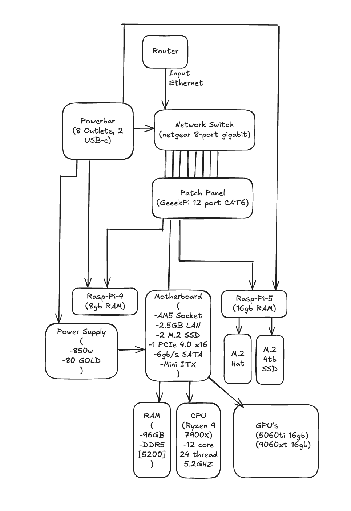

1 · What Is Homelabbing?
Homelabbing is the practice of building and running your own infrastructure at home—servers, storage, networking, and services. It can be as small as a dusty old PC you rescued from a closet, or as big as a dedicated 42U rack humming in the corner of a basement. The scale doesn’t matter; the spirit does.
At its best, a homelab is equal parts learning environment and playground. You will break things, fix them, and then rebuild them cleaner. You’ll discover the difference between “it runs” and “it runs reliably.” And you’ll ship real services that you and your family use every day—media, backups, automation, AI, and more.
Real talk: Homelabbing is mainly for fun. If you don’t feel excitement (and a little bit of fright) at the idea of running your own home server, it might not be for you—and that’s okay.
2 · What A Homelab Can Be
A homelab is not a single blueprint. It ranges from a single mini‑PC running a handful of containers to a full rack with virtualization, high‑availability storage, and segmented networking. You need almost no money to start. Many people bootstrap with free or cheap parts from local sellers on Facebook Marketplace or Kijiji, then iterate as their needs grow.
- Entry level — Old desktop or small form‑factor PC; 8–16GB RAM; a single SSD; runs Docker and a reverse proxy.
- Intermediate — Dedicated server chassis or NAS; 32–64GB RAM; mirrored storage; VLANs for isolation; a few VMs.
- Advanced — 42U rack; UPS and PDU; 10Gb networking; GPU(s) for AI; ZFS pools with snapshots and off‑site replication; full observability.
What you run is limited only by your curiosity: full automations with n8n, your own VPN, self‑hosted music and movies, private DNS, password managers, tooling for development and CI, personal AI clusters, and more. Some of these services will be experiments you retire; others will become “production” for your home.
3 · My Home Server Hardware
| Component | Model | Notes |
|---|---|---|
| CPU | AMD Ryzen 9 7900X | 12 cores / 24 threads; strong single‑ and multi‑core for AI + VMs |
| GPU #1 | NVIDIA GeForce RTX 5060 Ti 16GB | Primary inference GPU for local LLMs and image models |
| GPU #2 | AMD Radeon 9060 XT 16GB | Secondary GPU for experiments and offloading compatible workloads |
| Memory | 96GB DDR5 | Plenty of headroom for containers, VMs, and bigger context windows |
| Storage (aggregate) | ~5TB across hosts + NAS | Mix of NVMe and SSD; NAS for bulk storage + backups |
| Networking | 1GbE switch | Core switch for homelab; upgrade path to 2.5/10GbE |
| Power | 850W PSU + UPS | Headroom for dual‑GPU and safe shutdown on power loss |
| Edge/IoT | 2× Raspberry Pi | Lightweight services, sensors, and remote nodes |
Diagram: High‑level flow of my homelab networking and services.

4 · What It Runs
This is the core set I run day‑to‑day. The rest comes and goes as experiments.
- Private AI — Local LLMs and image models with a lightweight router for prompt‑type handoff. (present)
- Media — Jellyfin with automated libraries (Radarr/Sonarr) behind a hardened reverse proxy. (present)
- Storage — ZFS datasets with snapshots and encrypted off‑site replication to the NAS/remote. (present)
- Dev — Gitea + CI runners and a small container registry for projects. (present)
- Home — Home Assistant with sensors/bridges and dashboards. (present)
5 · Networking & Security
Everything is containerized and segmented with VLANs: LAN‑Core for infra, Media for streaming, IoT for untrusted devices. Public exposure rides through a reverse proxy with mTLS for admin apps, SSO where possible, Tailscale/WireGuard for remote access, and fail2ban on ingress. DNS is split‑horizon: internal *.home resolves locally; public subdomains are proxied and rate‑limited. Secrets live in environment‑specific stores and are rotated on a schedule.